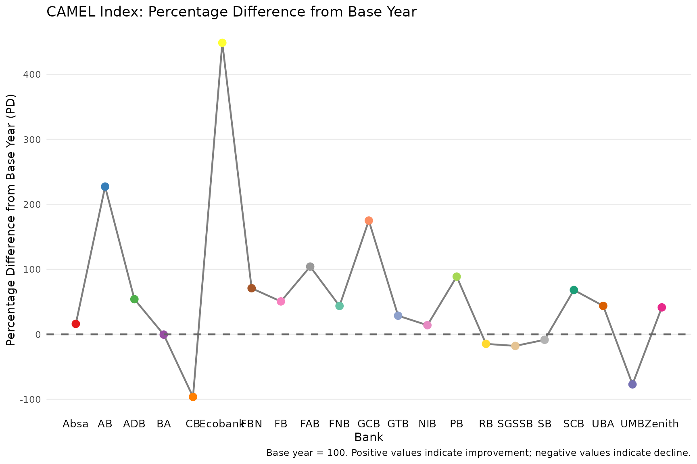
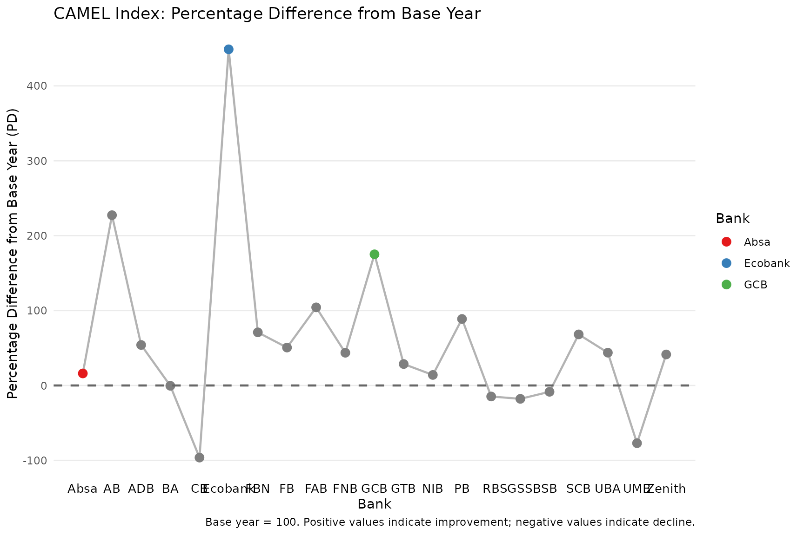
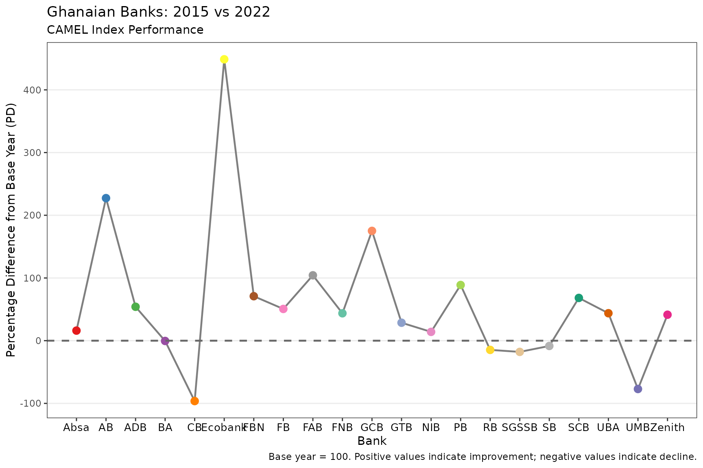
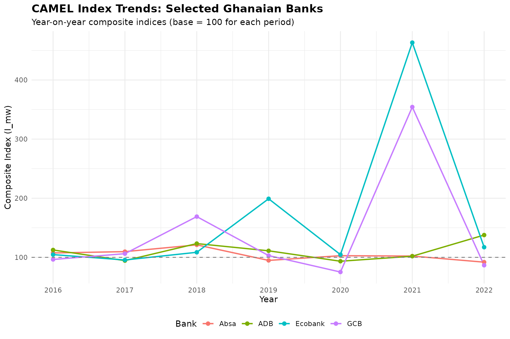
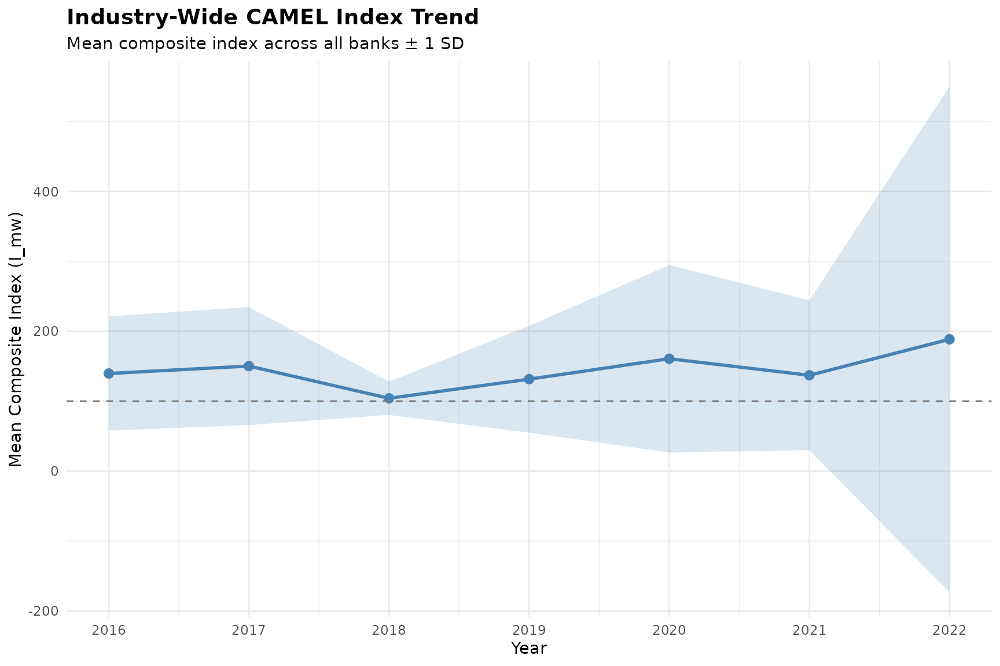

Overview
The CamelRatiosIndex package implements the multivariate-weighted indexing method proposed by Ayimah et al. (2023a, 2023b) for bank performance assessment using the CAMEL framework. The package provides:
-
camel_index(): Computes composite year-on-year indices from CAMEL ratio data -
plot_camel_index(): Visualizes percentage differences across banks using ggplot2 - Built-in data: Example datasets from Ghanaian commercial banks (2015-2022)
This composite index is intended to offer regulators and policymakers a standardised, objective for monitoring bank performance over time and across institutions. Its ability to benchmark banks against a common base year enhances early-warning capabilities, enabling supervisory authorities to identify emerging weaknesses individual banks as well as systemic vulnerabilities within the industry.
The CAMEL Framework
CAMEL is an internationally recognized framework for evaluating bank performance, comprising five dimensions:
| Dimension | Ratio | Direction |
|---|---|---|
| Capital Adequacy | Ca | Higher = better |
| Asset Quality | Aq | Higher = worse (inverted) |
| Management Efficiency | Me | Higher = worse (inverted) |
| Earnings | Eq | Higher = better |
| Liquidity | Lm | Higher = worse (inverted) |
Installation
# Install from GitHub (development version)
# install.packages("remotes")
remotes::install_github("YOUR-USERNAME/CamelRatiosIndex")Quick Start
Computing the CAMEL Index
library(CamelRatiosIndex)
# Load built-in example data
data("camel_2015")
data("camel_2022")
# Compute the index
result <- camel_index(camel_2015, camel_2022)
#> ℹ Using 3 factors (Kaiser criterion suggests 2 for base year).
# View the main output
result$index_table
#> # A tibble: 21 × 3
#> bank I_mw PD
#> <chr> <dbl> <dbl>
#> 1 Absa 116. 16.1
#> 2 AB 327. 227.
#> 3 ADB 154. 54.1
#> 4 BA 99.6 -0.420
#> 5 CB 3.72 -96.3
#> 6 Ecobank 549. 449.
#> 7 FBN 171. 70.9
#> 8 FB 151. 50.6
#> 9 FAB 204. 104.
#> 10 FNB 144. 43.7
#> # ℹ 11 more rowsAccessing Detailed Results
# Laspeyres-type indices (base year weights)
result$mw_lasp
#> [1] 1.17068455 3.24528378 1.52780746 0.98655880 0.01257239 6.02659502
#> [7] 1.65444746 1.54951394 2.03302237 1.49816252 2.98825411 1.28723657
#> [13] 1.13849623 -1.97551778 0.82971916 0.84601356 0.94124611 1.70736177
#> [19] 1.43859304 0.28238957 1.40351131
# Paasche-type indices (current year weights)
result$mw_pash
#> [1] 1.15082501 3.30155142 1.55371945 1.00501635 0.06177212 4.94882308
#> [7] 1.76427243 1.46318577 2.05241470 1.37566218 2.51395785 1.28567395
#> [13] 1.14279086 -1.80089258 0.87655232 0.79703627 0.89022374 1.65663138
#> [19] 1.43712269 0.17659450 1.42483169
# Communality weights from base year factor analysis
result$weights_base
#> X1 X2 X3 X4 X5
#> 0.7903609 0.7050024 0.8849089 0.8942996 0.8265737
# Eigenvalues
result$eigenvalues_base
#> [1] 2.1638843 1.2551681 0.9655781 0.3240539 0.2913156Visualizing Results
# Basic plot
plot_camel_index(result)
# Highlight specific banks
plot_camel_index(result, highlight_banks = c("Absa", "Ecobank", "GCB"))
# Custom styling
plot_camel_index(
result,
title = "Ghanaian Banks: 2015 vs 2022",
subtitle = "CAMEL Index Performance",
theme_fn = ggplot2::theme_bw
)
Data Format
Data Frame Input
When using data frames, the first column must be the bank identifier, followed by the five CAMEL ratios:
# Example structure
head(camel_2015)
#> # A tibble: 6 × 6
#> Bank Ca1 Aq1 Me1 Eq1 Lm1
#> <chr> <dbl> <dbl> <dbl> <dbl> <dbl>
#> 1 Absa 0.178 0.187 0.04 0.087 0.714
#> 2 AB 0.059 0.084 0.0432 0.011 0.783
#> 3 ADB 0.141 0.339 0.0669 0.024 0.965
#> 4 BA 0.229 0.101 0.0353 0.0219 0.964
#> 5 CB 0.214 0.055 0.024 0.049 1.23
#> 6 Ecobank 0.171 0.180 0.451 0.055 0.699Matrix Input
For matrices, supply bank names separately:
base_mat <- as.matrix(camel_2015[, -1])
curr_mat <- as.matrix(camel_2022[, -1])
banks <- camel_2015$Bank
result2 <- camel_index(base_mat, curr_mat, bank_names = banks)
#> ℹ Using 3 factors (Kaiser criterion suggests 2 for base year).Understanding the Output
The camel_index() function returns a rich object with
multiple components:
# Print overview
print(result)
#>
#> ── CAMEL Index Results ─────────────────────────────────────────────────────────
#> Base year factor analysis: 2 eigenvalue(s) > 1
#> Current year factor analysis: 2 eigenvalue(s) > 1
#> Factors extracted: 3
#>
#> ── Index Table ──
#>
#> # A tibble: 21 × 3
#> bank I_mw PD
#> <chr> <dbl> <dbl>
#> 1 Absa 116. 16.1
#> 2 AB 327. 227.
#> 3 ADB 154. 54.1
#> 4 BA 99.6 -0.420
#> 5 CB 3.72 -96.3
#> 6 Ecobank 549. 449.
#> 7 FBN 171. 70.9
#> 8 FB 151. 50.6
#> 9 FAB 204. 104.
#> 10 FNB 144. 43.7
#> # ℹ 11 more rows
#> ── Communality Weights (Base Year) ──
#> # A tibble: 5 × 2
#> ratio weight
#> <chr> <dbl>
#> 1 Ratio1 0.790
#> 2 Ratio2 0.705
#> 3 Ratio3 0.885
#> 4 Ratio4 0.894
#> 5 Ratio5 0.827
#> ── Summary Statistics ──
#> Mean I_mw: 160.05
#> Mean PD: 60.05%
#> Best performing bank: Ecobank (PD = 448.77%)
#> Worst performing bank: CB (PD = -96.28%)
# Detailed summary
summary(result)
#>
#> ── CAMEL Index Summary ─────────────────────────────────────────────────────────
#>
#> ── Eigenvalues (Base Year) ──
#>
#> # A tibble: 5 × 3
#> component eigenvalue variance_pct
#> <chr> <dbl> <dbl>
#> 1 PC1 2.16 43.3
#> 2 PC2 1.26 25.1
#> 3 PC3 0.966 19.3
#> 4 PC4 0.324 6.48
#> 5 PC5 0.291 5.83
#> ── Eigenvalues (Current Year) ──
#> # A tibble: 5 × 3
#> component eigenvalue variance_pct
#> <chr> <dbl> <dbl>
#> 1 PC1 2.06 41.1
#> 2 PC2 1.43 28.7
#> 3 PC3 0.788 15.8
#> 4 PC4 0.524 10.5
#> 5 PC5 0.199 3.97
#> ── Factor Loadings (Base Year) ──
#> # A tibble: 5 × 4
#> ratio Factor1 Factor2 Factor3
#> <chr> <dbl> <dbl> <dbl>
#> 1 Ratio1 0.835 0.0532 0.302
#> 2 Ratio2 0.766 0.00678 -0.343
#> 3 Ratio3 -0.162 0.920 0.114
#> 4 Ratio4 -0.00290 0.0102 0.946
#> 5 Ratio5 -0.469 -0.762 0.160
#> ── Index Distribution ──
#> # A tibble: 7 × 3
#> statistic I_mw PD
#> <chr> <dbl> <dbl>
#> 1 Min 3.72 -96.3
#> 2 Q1 99.6 -0.420
#> 3 Median 144. 43.7
#> 4 Mean 160. 60.1
#> 5 Q3 171. 70.9
#> 6 Max 549. 449.
#> 7 SD 115. 115.Key Metrics
- I_mw: Composite index (base = 100). Values > 100 indicate improvement; < 100 indicate decline.
- PD: Percentage difference from base year. Positive = improvement.
- mw_lasp: Laspeyres-type index using base year communality weights.
- mw_pash: Paasche-type index using current year communality weights.
- weights_base/current: Communality values from robust factor analysis, representing the proportion of variance explained by each CAMEL ratio.
Trend Analysis: Year-on-Year Comparison
The package supports trend analysis by computing indices for successive pairs of years. This allows you to track bank performance trajectories over multiple periods and identify emerging patterns that a single comparison might miss.
Computing Year-on-Year Indices
The package includes built-in datasets for eight years (2015-2022). To build a trend, compute the index for each consecutive year pair, using the earlier year as the base:
# Compute year-on-year indices
yoy_results <- list(
"2015-2016" = camel_index(camel_2015, camel_2016, n_factors = 2),
"2016-2017" = camel_index(camel_2016, camel_2017, n_factors = 2),
"2017-2018" = camel_index(camel_2017, camel_2018, n_factors = 2),
"2018-2019" = camel_index(camel_2018, camel_2019, n_factors = 2),
"2019-2020" = camel_index(camel_2019, camel_2020, n_factors = 2),
"2020-2021" = camel_index(camel_2020, camel_2021),
"2021-2022" = camel_index(camel_2021, camel_2022, n_factors = 2)
)Extracting Trend Data
Extract the index values for each bank across all periods:
library(dplyr)
#>
#> Attaching package: 'dplyr'
#> The following objects are masked from 'package:stats':
#>
#> filter, lag
#> The following objects are masked from 'package:base':
#>
#> intersect, setdiff, setequal, union
library(purrr)
# Build a trend table: one row per bank, one column per year-pair
trend_data <- yoy_results |>
imap(\(data, period) {
data$index_table |>
select(bank, !!period := I_mw)
}) |>
reduce(full_join, by = "bank")
# View the trend table
trend_data
#> # A tibble: 21 × 8
#> bank `2015-2016` `2016-2017` `2017-2018` `2018-2019` `2019-2020` `2020-2021`
#> <chr> <dbl> <dbl> <dbl> <dbl> <dbl> <dbl>
#> 1 Absa 107. 110. 121. 94.8 103. 102.
#> 2 AB 170. 99.2 148. 87.0 158. 105.
#> 3 ADB 112. 94.4 123. 111. 93.4 102.
#> 4 BA 108. 87.0 113. 131. 226. 65.6
#> 5 CB 82.8 358. 104. 84.8 235. 307.
#> 6 Ecob… 105. 95.5 108. 199. 105. 463.
#> 7 FBN 354. 123. 99.3 310. 149. 85.6
#> 8 FB 374. 235. 80.7 338. 81.9 192.
#> 9 FAB 159. 95.7 106. 4.09 308. 117.
#> 10 FNB 81.9 270. 94.9 204. 69.1 24.5
#> # ℹ 11 more rows
#> # ℹ 1 more variable: `2021-2022` <dbl>Visualizing Trends
Plot the trajectory of a specific bank over time:
library(ggplot2)
library(tidyr)
# Reshape for ggplot2
trend_long <- trend_data |>
pivot_longer(
cols = -bank,
names_to = "period",
values_to = "I_mw"
) |>
mutate(
end_year = as.numeric(gsub(".*-", "", period))
)
# Plot trends for selected banks
selected_banks <- c("Absa", "Ecobank", "GCB", "ADB")
trend_long |>
filter(bank %in% selected_banks) |>
ggplot(aes(x = end_year, y = I_mw, colour = bank, group = bank)) +
geom_line(linewidth = 0.8) +
geom_point(size = 2) +
geom_hline(yintercept = 100, linetype = "dashed", color = "grey50") +
scale_x_continuous(breaks = 2016:2022) +
labs(
title = "CAMEL Index Trends: Selected Ghanaian Banks",
subtitle = "Year-on-year composite indices (base = 100 for each period)",
x = "Year",
y = "Composite Index (I_mw)",
colour = "Bank"
) +
theme_minimal() +
theme(
legend.position = "bottom",
plot.title = element_text(face = "bold", size = 14)
)
Industry-Wide Trend
Compute the mean index across all banks for each period to assess overall sector health:
# Industry mean index by period
industry_trend <- trend_long |>
group_by(end_year) |>
summarise(
mean_I_mw = mean(I_mw, na.rm = TRUE),
sd_I_mw = sd(I_mw, na.rm = TRUE),
n_banks = n(),
.groups = "drop"
)
industry_trend
#> # A tibble: 7 × 4
#> end_year mean_I_mw sd_I_mw n_banks
#> <dbl> <dbl> <dbl> <int>
#> 1 2016 140. 81.6 21
#> 2 2017 150. 84.4 21
#> 3 2018 104. 23.8 21
#> 4 2019 131. 76.4 21
#> 5 2020 161. 134. 21
#> 6 2021 137. 107. 21
#> 7 2022 188. 362. 21
# Plot industry trend with confidence band
industry_trend |>
ggplot(aes(x = end_year, y = mean_I_mw)) +
geom_ribbon(
aes(ymin = mean_I_mw - sd_I_mw, ymax = mean_I_mw + sd_I_mw),
fill = "steelblue", alpha = 0.2
) +
geom_line(colour = "steelblue", linewidth = 1) +
geom_point(colour = "steelblue", size = 2.5) +
geom_hline(yintercept = 100, linetype = "dashed", colour = "grey50") +
scale_x_continuous(breaks = 2016:2022) +
labs(
title = "Industry-Wide CAMEL Index Trend",
subtitle = "Mean composite index across all banks ± 1 SD",
x = "Year",
y = "Mean Composite Index (I_mw)"
) +
theme_minimal() +
theme(plot.title = element_text(face = "bold", size = 14))
Identifying Consistent Performers
Find banks that improved consistently (index > 100 in most periods):
# Count how many periods each bank improved
trend_summary <- trend_long |>
group_by(bank) |>
summarise(
periods_above_100 = sum(I_mw > 100, na.rm = TRUE),
total_periods = sum(!is.na(I_mw)),
mean_I_mw = mean(I_mw, na.rm = TRUE),
.groups = "drop"
) |>
mutate(
improvement_rate = round(periods_above_100 / total_periods * 100, 1)
) |>
arrange(desc(improvement_rate), desc(mean_I_mw))
trend_summary
#> # A tibble: 21 × 5
#> bank periods_above_100 total_periods mean_I_mw improvement_rate
#> <chr> <int> <int> <dbl> <dbl>
#> 1 Ecobank 6 7 170. 85.7
#> 2 UBA 6 7 114. 85.7
#> 3 FBN 5 7 176. 71.4
#> 4 AB 5 7 140. 71.4
#> 5 BA 5 7 132. 71.4
#> 6 FAB 5 7 128. 71.4
#> 7 Zenith 5 7 112. 71.4
#> 8 ADB 5 7 111. 71.4
#> 9 Absa 5 7 104. 71.4
#> 10 GTB 4 7 203. 57.1
#> # ℹ 11 more rowsMethodology
The index computation follows these steps:
- Transform ratios: Invert Aq, Me, and Lm so that higher values always indicate better performance.
- Compute correlations: Build correlation matrices for base and current years.
- Extract eigenvalues: Determine the number of factors (eigenvalues > 1).
- Robust factor analysis: Use [robustfa::FaCov()] with OGK covariance estimation.
- Extract communalities: Use communalities as weights for each CAMEL ratio.
- Compute indices: Calculate Laspeyres and Paasche indices, then average them.
- Scale to base 100: Final composite index with percentage difference.
References
Ayimah, J. C., Mettle, F. O., Nortey, E. N., & Minkah, R. (2023a). A Robust Multivariate Weighting Technique for Computing a Measure for Inflation. African Journal of Technical Education and Management, 3(1), 1-15. Retrieved from https://ajtem.com/index.php/ajtem/article/view/53.
Ayimah, J.C. (2023b). Computing Multivariate-Weighted Consumer Price Index: An Application Manual in R. B P International. DOI: 10.9734/bpi/mono/978-81-19315-32-1. DOI:http://dx.doi.org/10.9734/bpi/mono/978-81-19315-32-1